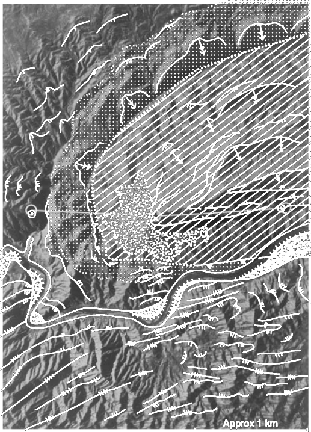
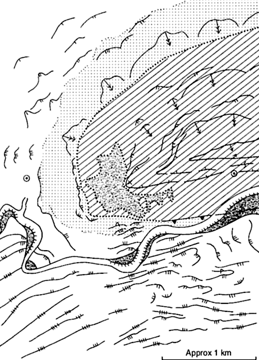
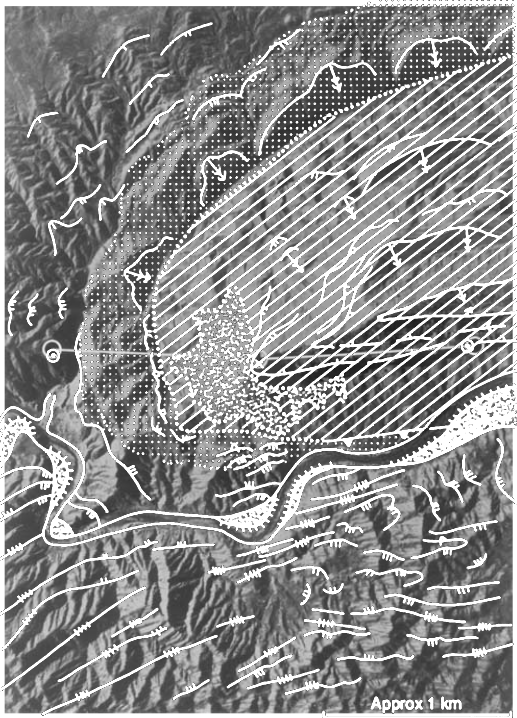
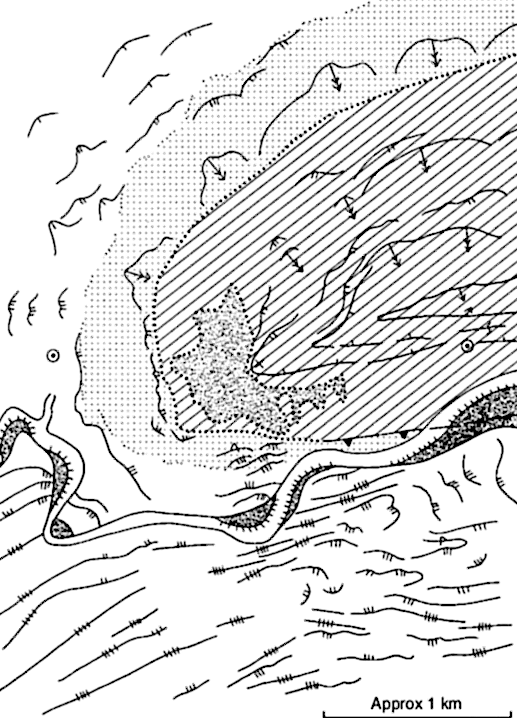

A workflow for earth and planetary geologic mapping in the digital domain
2nd Planetary Mapping and Virtual Observatory Workshop
1-3 July 2019, Domaine de St. Paul, Saint-Rémy-lès-Chevreuse, France
Alessandro Frigeri
Istituto di Astrofisica e Planetologia Spaziali - IAPS
Istituto Nazionale di Astrofisica - INAF
Rome, Italy
alessandro.frigeri@inaf.it / @afrigeri
Interpretative mapping
 



Interpretative mapping and remote sensing
Intrpretation of features from basemaps
- in the digital domain, we need:
- Spatial registration of dataset
- Information stacking
- Data interactivity (I/O)
Geographic Information Systems offer this environment
The geologic map in a GIS
Elements:
- Data interoperability
- Digitizing
- Graphical rendering (symbology)
Data models
There are two different GIS data models for editing vector data
- Eulerian mode: node/boundary
- Points/line/polygon model